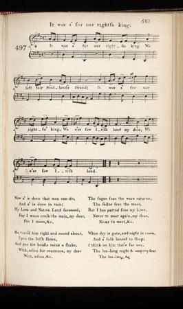

It was a' for our Rightful King
A l'appel du vrai roi
The Jacobite Army in Ireland 1690
L'armée Jacobite en Irlande
The ballad "Mally Stewart" revisited by Robert Burns
Scots Musical Museum Volume V N° 497 page 513, 1796and Hogg's "Jacobite Relics" Volume 1 N°15, 1819
Tune - Mélodie
"Bonny Mally Stewart"
Sequenced by Christian Souchon

|
To the tune:
Though no name is attached to them in the Scots Musical Museum, there is little doubt that these stirring and romantic verses were from the hand of Robert Burns . The commentator Stenhouse first connected his name with them. Hogg, who published the song under N°15 in his "Relics", volume I, (1819) wrote that it "is traditionally (?) said to have been written by a Captain Ogilvy related to the house of Inverquharity”, soon imitated by Allan Cunningham ("Songs of Scotland", vol. III, 1825). Then Motherwell inserted these verses in the "Works of Burns" (Glasgow, 1835), and finally Scott-Douglas, in the Edinburgh Edition, 1877, I, ll. 192, produced a facsimile of the Burns MS. The ballad "Bonny Mally Stuart" (see below) which Motherwell and Hogg printed in 1834 in their "Works of Robert Burns" is the foundation of Burns's verses. But the original is a street ballad , "Mally Stuart", supposed to belong to the Rebellion of 1745 (see "Centenary Burns", vol.ll.) which was reproduced in Chap books with considerable variations, and was popular in the streets of Edinburgh at the close of the eighteenth century. The only stanza which Burns borrowed is the last one in the ballad from a contemporary Chap book, as follows: ' The trooper turned himself round about...' (see below) The rest of Burns's song owes nothing to the original, except the rhythm. The street ballad of 'Bonny Mally Stuart' or 'Bonny Stirling town ' in eleven stanzas, remarkable for its disregard of metre, describes the parting of the trooper with his sweetheart who, however, disguises herself in men's clothes and follows him. Sir Walter Scott, in his notes to "Rokeby, Canto 3",acknowledges that it suggested to him the idea of his own beautiful lyric, " A weary lot is thine." The tune "Mally Stuart" is a variation of "The bailiff's daughter of Islington" , an English melody of the seventeenth century. In some chapbook copies this ballad is directed to be sung to "a North country" tune, or "I have a good old mother at home". Source "Complete works of Robert Burns Online Book" (cf. Liens). |
A propos de la mélodie:
"Bien que la pièce ne lui soit pas attribuée dans le "Musée musical écossais", on ne saurait douter que ces vers émouvants et romantiques ne soient de Robert Burns . Le commentateur Stenhouse fut le premier à les lui attribuer. Hogg, les inclut dans ses "Reliques", vol.1 sous le N°15 en affirmant que la tradition (?) les attribuait à un certain "Capitaine Ogilvy, apparenté aux Inverquharity”, une opinion erronée que partage A. Cunningham dans ses "Chants d'Ecosse", volume III, publié en 1825 W. Motherwell les reproduisit dans ses "Œuvres de Burns" (Glasgow, 1835) et, pour finir, Scott-Douglas dans l'édition d'Edimbourg, 1877,I, 11, 192, reproduisit un fac-simile du manuscrit de Burns. La ballade "Bonny Mally Stuart" (cf. ci-après) que Motherwell et Hogg ont reproduite dans leurs "Oeuvres de Burns" sert de base aux vers de Burns. Mais l'archétype est une chanson des rues , "Ma(l)ly Stuart ", qu'on croit remonter à 1745 (cf. "Edition de Burns du Centenaire", vol. II) et qui circulait sous forme de chapbooks avec d'innombrables variantes, dans les rues d'Edimbourg, à la fin du 18ème siècle. La seule strophe empruntée par Burns est la dernière de la ballade sur un chapbook de l'époque: 'Le hussard fit faire à son cheval demi-tour'...(cf. plus bas). Le reste du chant de Burns ne doit rien à l'original, si ce n'est le rythme. La chanson des rues "Jolie Mally Stuart" ou "La belle ville de Stirling" avec ses 11 couplets est remarquable par ses entorses à la métrique. Elle décrit la séparation du cavalier et de sa bien-aimée qui, cependant, se déguise en garçon pour le suivre. Sir Walter Scott, dans ses notes relatives à "Rokeby, Canto 3", reconnait qu'elle lui a suggéré l'idée de son beau poème "Quel sort pénible que le tien." La mélodie "Mally Stuart" est une variante de "la fille du Bailli d'Islington ", une mélodie anglaise du 17ème siècle. Dans quelques chapbooks on indique que la ballade se chante sur l'air de "North Country" ou "Ma vieille mère en mon logis" Source "Complete works of Robert Burns Online Book" (cf. Liens). |

|
1. It was a' for our rightfu' King (*)
We left fair Scotland's strand; It was a' for our rightfu' King We e'er saw Irish land, my dear, We e'er saw Irish land. 2. Now a' is done that men can do, And a' is done in vain; My Love and Native Land fareweel, For I maun cross the main, my dear, For I maun cross the main. 3. He turn'd him right and round about, Upon the Irish shore; And gae his bridle reins a shake, With adieu for evermore, my dear, And adieu for evermore. 4. The soger frae the wars returns, The sailor frae the main; But I hae parted frae my Love, Never to meet again, my dear, Never to meet again. 5. When day is gane, and night is come, And a' folk bound to sleep; I think on him that's far awa, The lee-lang night, and weep, my dear, The lee-lang night, and weep. (*) Maybe King James II/VII who left Ireland after his defeat at the battle of the Boyne. |
1. Ayant quitté l'Ecosse à l'appel du vrai Roi (*),
Nous abordâmes en Irlande Pour la première fois, à l'appel du vrai roi Oui ce fut pour la première fois, ma chère, Oui ce fut pour la première fois. 2. Nous fîmes l'impossible et le fîmes en vain. Adieu l'Ecosse, adieu chère âme, Le moment est venu de m'en aller au loin, Car il me faut franchir l'océan, ma chère, Car il me faut franchir l'océan. 3. Il fit faire à droite à son cheval demi-tour, Là-bas sur la grève d'Irlande; Il a secoué sa bride, disant pour toujours "Adieu, nous ne nous reverrons plus, mes frères, Adieu, nous ne nous reverrons plus." 4. Il n'est point de soldat qui ne revienne un jour; De marin que la mer ne rende. Mais moi, mon amour m'abandonne pour toujours, Pour toujours, sans espoir de retour, ma chère, Pour toujours, sans espoir de retour. 5. Quand le jour s'obscurcit et que descend la nuit, Alors même que tous reposent, Je pense à celui qui demeure loin d'ici Et je ne fais que me lamenter, ma chère, Et je ne fais que me lamenter.
(*) Peut-être s'agit-il du roi Jacques II/VII qui quitta l'Irlande après sa défaite à la Boyne.
|
BONNY MALLY STEWART
The non-Jacobite ballad which is the foundation of Burns's verses
|
1. The cold winter it is past and gone,
And now comes on the spring, And I am one of the king's life-guards, And I must go fight for my king, my dear; And I must go fight for my king. 2. Now since to the wars you must go, One thing I pray grant me, It's I will dress myself in man's attire, And I'll travel along with thee, my dear, And I'll travel along with thee. 3. I would not for ten thousand worlds That my love endangered were so ; The rattling of drums and shining of swords, Will cause great sorrow and woe, my dear, Will cause great sorrow and woe. 4. I will do the thing for my true love, That she will not do for me; It's I'll put cuffs of black on my red coat, And mourn till the day I die, my dear, And mourn till the day I die. 5. I will do more for my true love, Than he will do for me; I'll cut my hair and roll me bare, And mourn till the day I die, my dear, And mourn till the day I die. 6. So farewell mother and father dear, My kith and kin also, My sweet and bonny Mally Stewart, You're the cause of all my woe, my dear, You're the cause of all my woe. 7. When we came to bonny Stirling town, As we lay all in tent, By the King's orders we were all taken, And to Germany we were all sent, my dear, And to Germany we were all sent. 8. So farewell bonny Stirling town, And the maids therein also; And farewell bonny Mally Stewart, You're the cause of all my woe, my dear, You're the cause of all my woe. 9. She took the slippers off her feet, And the cockups off her hair ; And she has ta'en a long journey, For seven lang years and mair, my dear, For seven lang years and mair. 10. Sometimes she rade, sometimes she gaed, Sometimes sat down to mourn, And it was aye the o'ercome o' her tale, Shall I e'er see my bonny laddie return, my dear, Shall I e'er see my bonny laddie return. 11. The trooper turned himself round about, All on the Irish shore; He has gi'en the bridle reins a shake, Saying adieu for evermore, my dear, Saying adieu for evermore. |
1. Voici venue la fin de l'hiver et du froid
Au printemps ils laissent la place Et moi qui sers, hélas, dans la garde du roi Il me faut partir combattre au loin, ma chère, Il me faut partir combattre au loin. 2. A partir en guerre on te fait obligation, Mais je te demande une chose: Laisse-moi revêtir un habit de garçon Et laisse-moi te suivre en tout lieu, mon cher, Et laisse-moi te suivre en tout lieu. 3. Pour tout l'or du monde je ne veux, chère enfant, Que tu risques ainsi ta vie. Roulements de tambours, sabres étincelants, Ne causent que deuil et affliction, ma chère, Ne causent que deuil et affliction. 4. Voilà ce que pour elle il est en mon pouvoir De faire sans qu'elle m'imite: Mettre à mon habit rouge des poignets tout noirs Et porter le deuil jusqu'à ma mort, ma chère, Et porter le deuil jusqu'à ma mort. 5. Moi, pour mon cher amour, je ferai plus encor Qu'il ne saurait faire lui-même; Couper ma chevelure et sous d'humbles dehors Porter le deuil jusques à ma mort, mon cher, Porter le deuil jusques à ma mort. 6. Portez-vous bien ma mère et mon père, je pars, Amis et parents je vous quitte. Ma douce et ma ravissante Mally Stewart, Toi seule est la cause de mon deuil, ma chère, Toi seule est la cause de mon deuil. 7. Nous étions réunis sous la tente une fois, A Sterling, cette belle ville Quand nous fûmes envoyés, sur l'ordre du roi, En Allemagne pour guerroyer, ma chère, En Allemagne pour guerroyer. 8. Agréable Stirling, c'est l'heure du départ; Je vous quitte, charmantes filles; Je dois prendre congé, belle Mally Stewart, Toi seule est la cause de mon deuil, ma chère, Toi seule est la cause de mon deuil. 9. Elle ôte de ses pieds les souliers élégants Et de ses cheveux les parures, Et pour un long voyage elle part à présent, Et pour sept longues années ou plus, ma chère, Oui, pour sept longues années ou plus. 10. Elle chemine à pied et à cheval aussi: Quand elle s'asseoit, elle pleure, Et son triste récit toujours finit ainsi: Mon ami reviendra-t-il un jour, ma chère? Mon ami reviendra-t-il un jour? 11. Le hussard fit faire à son cheval demi-tour Là-bas sur la côte d'Irlande Quand il a secoué la bride, c'était pour Dire adieu, dire adieu pour toujours, ma chère, C'était pour dire adieu pour toujours. |
(Arrangement Lunny/Stewart in "Songs of Robert Burns")